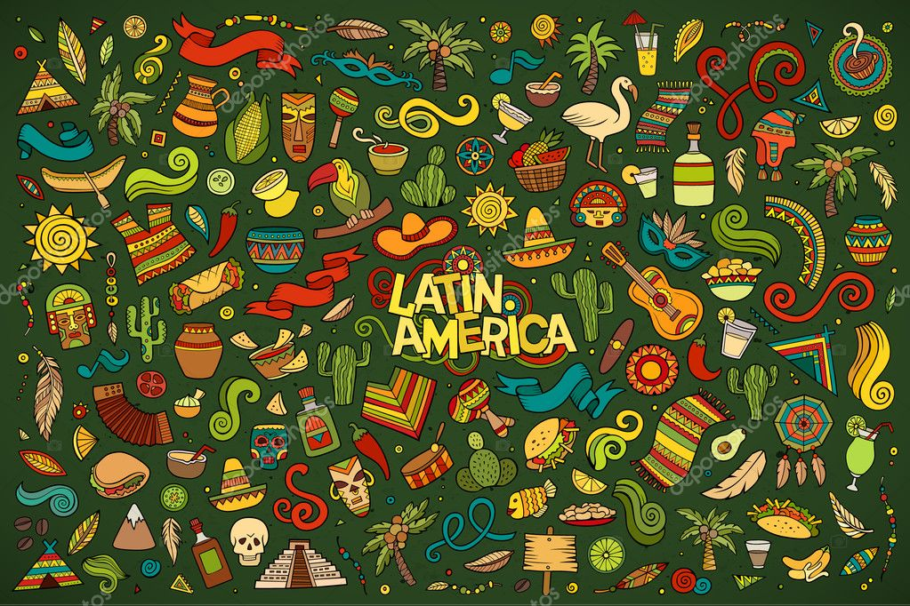

Retrospective Essay
As I explained in my Division II contract, my plan for Division II was to strengthen my understanding of US international relations while focusing on its interactions with Latin America. At the same time, I also aimed to amplify my knowledge of politics, history, and culture in more Latin American countries from various perspectives, and I did just that. Regardless of the class I took, I always made sure to connect the course material with my topics of interest and tried to follow a particular pattern. This can be observed in the Portfolio, which is divided into categories by theme/topic instead of semester or course names. This way, it was easier to keep track of what I did, and at the same time, it served as a reminder of what else was needed to accomplish my personal goal of learning.
When reviewing my coursework included in the portfolio, I found numerous grammatical errors and sentences that could have been worded much better. As you can see, I decided not to edit/modify any of the work for the portfolio's purpose because it serves to track my improvement and areas of weakness in the English language. It is no secret that I immigrated to the United States during my teenage years, and my relationship with the English language has been complicated since day one. Looking back at my old grammatical errors and complicated wording reminds me of where I came from and how far I’ve come.
Besides taking socio-political-focused college courses, I also prioritized my involvement in and contribution to my Hampshire community and my personal growth. As can be found in the portfolio, before and during the academic school year, I was occupied serving my Hampshire community by being an Orientation Leader three times (F22, F23, and F24) and being part of the Student Advocacy Board (SAB), Hampshire’s version on a student body, in which my role was (and still is) to be the Student Life Representative, in which I advocated and fought for the experiences of the student body that live both on and off-campus. Lastly, I’ve spent the last year learning Brazilian Portuguese and recently have also learned some basic coding.
Moving forward, for my Division III, I’ll combine all the knowledge I’ve acquired in the past years and will be writing the biographies of three undocumented Latino immigrants, including their childhood and teenage years, family relations, life experiences, emigration to immigration journey, and quotidian life here in the United States.